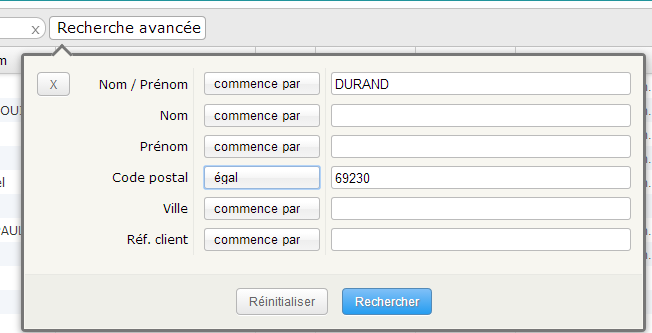

Le champ de recherche permet de rechercher un client grâce à son nom, son prénom, son code postal, sa ville ou sa référence client.
Les résultats sont affichés dans une fenêtre popup.
La recherche via le champ de saisie cherche sur tous les champs simultanément.
Cliquer sur le bouton « Recherche avancée » pour faire une recherche précise champ par champ.
